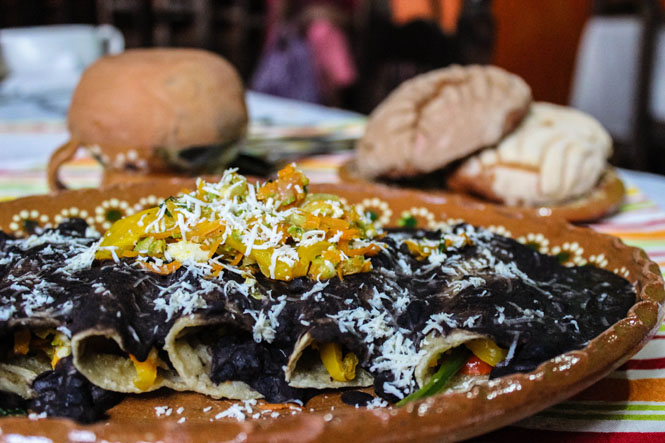
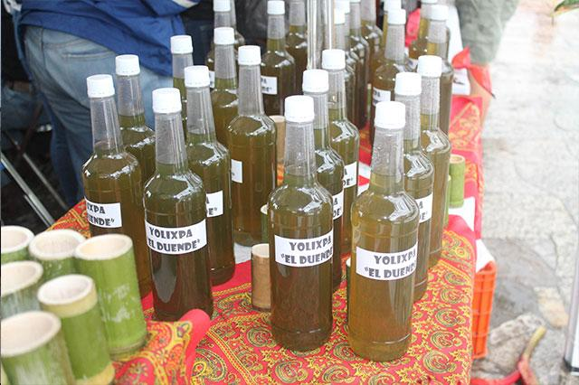
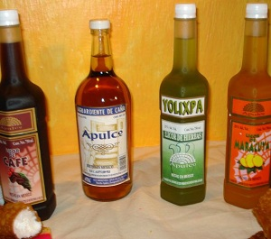

¡¡Que rico!!
Gastronomía de Cuetzalán

Los locales utilizan ingredientes frescos
para preparar un sinfín de delicias: frijoles,
maíz, hongos y setas –que abundan debido al
clima húmedo– y frutos como maracuyá, perón
y macadamia, entre otros.

Durante la Cuaresma, abundan las
opciones para degustar manjares libres de
carne. Basta caminar por los callejones
empedrados del pueblo para toparse con
puestos de antojitos y pequeños locales donde
se venden dulces y licores artesanales.

Si quieres probar lo más típico dirígete al
mercadito central e inicia tu comida con una
sopa calientita de hongos o setas silvestres. Para
comer, los locales usan tortillas recién hechas
en lugar de cubiertos. Otros manjares locales
son los tamales de frijol y de mole, los tayoyos
–un tipo de gorditas preparadas con hoja de
aguacate– y los guisados con quelites, una
planta comestible.

En los restaurantes de Cuetzalan las
estrellas de los menús son las acamayas, un
crustáceo de aguas dulces similar a la langosta
que se pesca y prepara desde tiempos
prehispánicos. Se cocina en sopa, crema, al
mojo de ajo o a la mantequilla, en salsa de chile
guajillo o adobado con chile, cebolla y epazote.
¡Tienes que probarlo!

Para acompañar tus platillos pide un vaso
de yolixpa, un licor que contiene 23 hierbas,
endulzado con piloncillo o miel. Prueba
también el vino de café o de maracuyá. Y para
llevar a casa, no olvides comprar pan y quesos
artesanales y conservas de frutas.